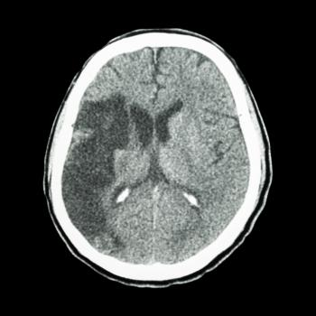
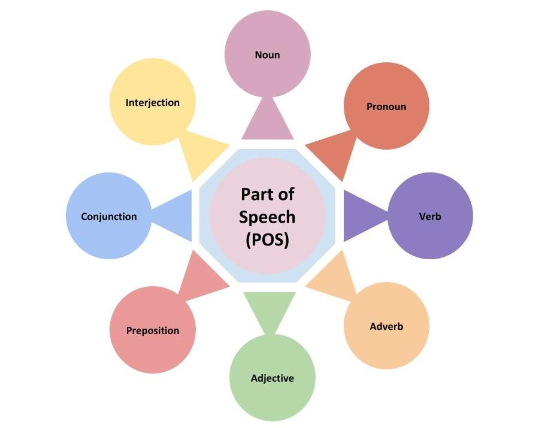
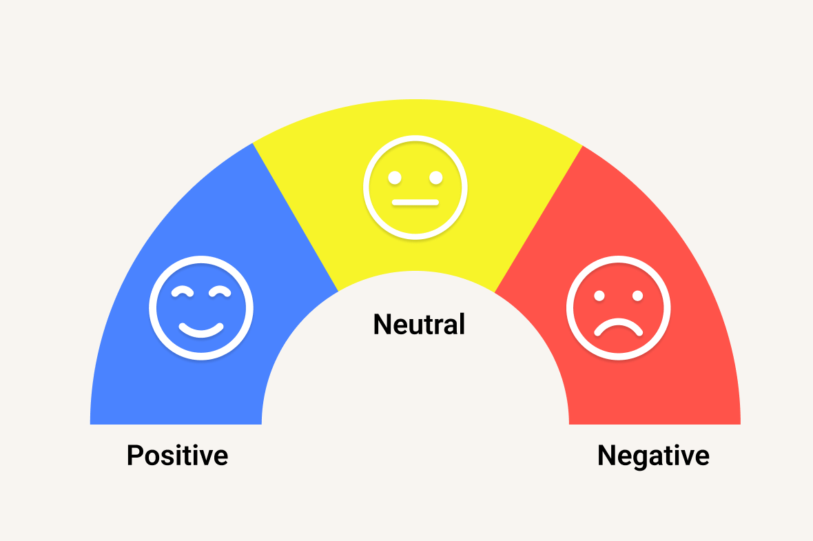

Brain Stroke Prediction Using Visual Geometry Group Model
Early disease detection can significantly improve diagnosis and support timely medical intervention.
In this study, we introduce a pre-trained VGG-16 convolutional neural network (CNN) fine-tuned on MRI scans from patients with and without strokes, to classify and predict stroke occurrence. This research demonstrates that the VGG-16 model can achieve high accuracy of 80 percent in predicting the likelihood of stroke by analysing the images of the brain without overfitting.

POS Tagging - Tamil using Hidden Markov Model and Viterbi Algorithm
NOTE: Paper submitted as a part of the project and reviewed by the Professor.
Implemented a probabilistic language model using a Hidden Markov Model (HMM) and the Viterbi algorithm to perform Part-of-Speech (POS) tagging for Tamil, a low-resource language.
The study involved preprocessing text through tokenization, stemming, and lemmatization, followed by formatting sentences with start and end tags. The model leveraged emission and transition probabilities to infer hidden POS states from observed words. It achieved an accuracy of 99%, demonstrating its effectiveness in assigning appropriate grammatical tags to words in Tamil sentences.
Real Time Speech and RAG System using Whisper X LLM
In this project experience, I integrated OpenAI WhisperX for real-time speech-to-text with a RAG pipeline powered by Mistral 7B, enabling audio-based queries and context-grounded text responses. I also implemented TitaNet speaker embeddings and MarbleNet VAD with NVIDIA NeMo's ASR pipeline for speaker adaptation, voice activity detection, and audio segmentation.

Sentiment Analysis in Welsh Language
This project involved developing a sentiment analysis model for the Welsh Language, a low-resource language. The model was trained using 2 different models; Naïve Bayes which achieved an accuracy of 0.78%, and LSTM (Long Short-Term Memory) model which achieved a lower accuracy of 0.52%.
- Naive Bayes - Calculated the word frequencies in the positive and negative tweets and used log-prior probabilities to classify the sentiment while minimizing numerical underflow.
- LSTM - Utilized recurrent neural networks to capture sequential dependencies in the text data for sentiment classification. Utilized sigmoid as the activation function, binary_crossentropy as the loss function, adam as the optimizer and accuracy score for the measuring metric.
Professional Experiences
HR Analyst
Capital Group
- Led the end to end deployment of the Total Rewards Statement for the US, UK and Switzerland, leveraging external data from SAP, external payroll results line and compensation using Prism Analytics and BIRT.
- Collaborated with the Payroll team to identify, analyse and resolve $480K worth of data discrepancy related to retirement plan contribution, using Excel functions like VLOOKUP, Conditional Formatting, and Pivot tables.
- Set up 3 EIB integrations via SFTP connection and performed XSLT report transformation to send retirement contribution effective rates grouped by Associate and Cost Center in csv format to an external AWS Lakehouse.
HRIS Analyst
MG Cloud Technologies
- Managed HR reporting, including monthly, quarterly, and annual KPIs for business stakeholders, and served as the SME for incoming HR data requests in Workday.
- Resolved 150+ post-go-live and hyper care incidents involving Workday integrations and reporting, restoring critical HR data flows while maintaining 98% SLA compliance for P1/P2 production issues.
- Diagnosed slow dashboard rendering issues in a 2M-row database; optimized underlying SQL queries by rewriting nested subqueries, decreasing dashboard load times by 12%.
Other
Scholarships & Funding
- Global Graduate Scholarship · 2021 - 2023
- Digital Humanities Advancement Grant · National Endowment for the Humanities (NEH) · 2022